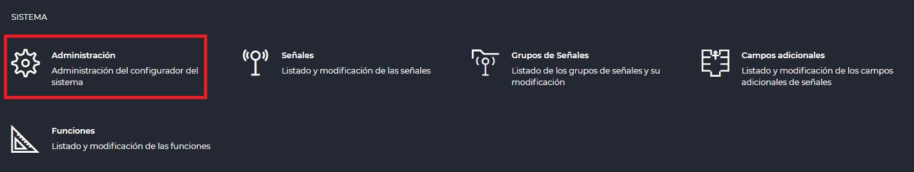
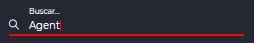
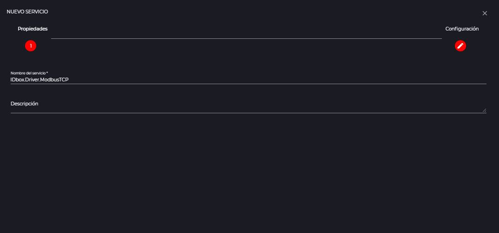
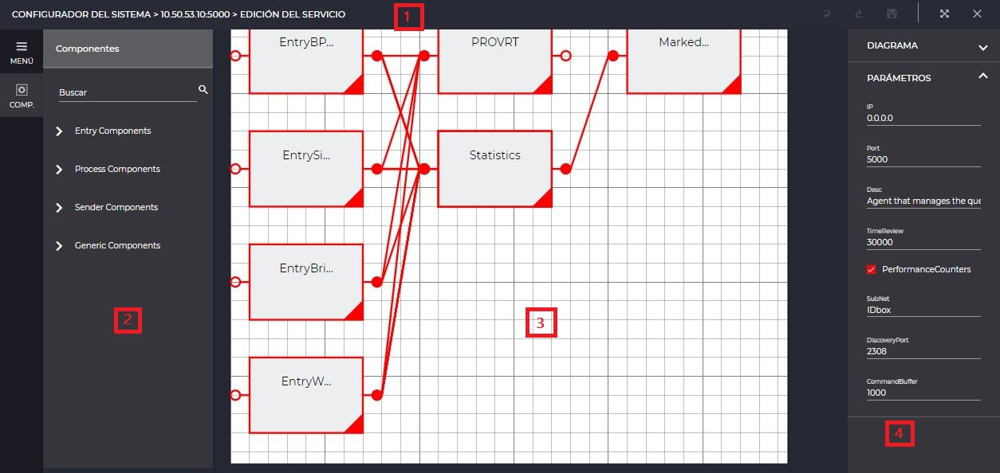
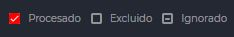
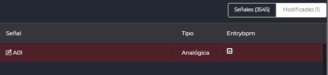

Data acquisition
- 1 Introduction
- 2 Status monitor
- 2.1 License information
- 2.2 Architecture
- 3 Creation of services
- 4 Editing services
- 4.1 Diagram editing
- 4.2 Catalog edition
- 4.2.1 Interaction of signals and parts
- 4.2.2 Change control
1. Introduction
IDboxRT consists of different services that are orchestrated to provide the desired custom functionality, such as data acquisition. The administration and configuration of these services can be done through the system administrator via its status monitor and service creation/edit pages. Throughout the section, the operation of each of these is shown, which can be accessed from the control panel as shown in the following image.

2. Status monitor
The status monitor is the access point to service administration, allowing to visualize and configure the currently installed services or the creation of new ones across the different servers to which access is available.
2.1 License information
Located at the top right, and as shown in the following image, the license information displays its type, the percentage of used signals compared to its limit and its expiration date. The progress bar shows the current consumption percentage graphically.

2.2 Architecture
To facilitate the location of each of the services, they are shown grouped in different blocks that represent the server that hosts them. As an example, the following image shows a single server, but the number will depend on the number of servers comprising the infrastructure.

This visualization is structured in three parts highlighted in red, which are detailed below.
- Actions: in addition to displaying your routing, it allows you to add a new service, start or stop the selected service, as well as access the diagram edition or catalog edition.
- Consumption and performance: shows the memory and cpu usage of both IDbox and the server, as well as the available storage.
- Services: complete list of the services associated to the server, together with their status, name, description, port, date of execution, signal number and version.
Moreover, as an additional tool to facilitate the search for services, in the upper left corner it is possible to enter a term that applies to all available servers simultaneously, filtering all possible matches.

3. Creation of services
By means of the new service available action from the desired server in the status monitor, the step-by-step wizard for service creation is started. The first step must be completed with the name to be given to the service, and an optional description, as shown in the following image.

The second step allows the configuration of the service from a predefined template in the system, which can be selected on the left, and which can be either a default “Empty Service” or a specific type of driver. While in the first case it will not be necessary to provide further details, in the second scenario it is necessary to complete a series of basic initialization parameters, as shown in the following image as an example.

4. Editing services
Services can be modified from two perspectives: diagram and catalog editing. While the first editor facilitates the configuration of the general logic and behavior of the service, the second allows managing the interaction with the IDbox signals it contains.
4.1 Diagram editing
To access the diagram editor, simply select the desired service from the status monitor and click on the service editor icon: . Once activated, the editor is available for use as shown in the following image together with the sections described below.

- Actions: provides the undo, redo, save, full screen and close editing tools.
- Tools: provides access to the editing operations and components available for use.
- Tapestry: design area where you can drag and link the components according to the flow you want to build.
- Properties: each of the elements selected in the tapestry has a series of properties that can be customized in this right panel.
4.2 Catalog edition
Catalog editing can be accessed by selecting the desired service in the status monitor and clicking on the catalog icon: . As shown in the following image, after this action the editor becomes available for use with different areas of use described below.

- Actions: allows you to execute the saving of changes, full screen and closing of the edition.
- Catalog: shows the list of signals that are part of the service catalog and how to interact with the parts. It also facilitates the operations of importing signals to the system, exporting import template, and adding or deleting signals from the system to the catalog.
- Properties: facilitates the configuration of the properties for the selected signal according to the parts it processes and allows a direct access to signal editing as well as its summary information.
In the case of modifying a signal from the catalog edition, saving an alarm or limit configuration of the signal will cause its synchronization with the catalog when a LIMIT part is present, as shown in the following warning.

4.2.1 Interaction of signals and parts
The interaction between the signals included in the catalog and the service parts can take three states which are shown in the following figure and described below.

- Processed: the selected part and signal are configured and in operation.
- Excluded: the selected part and signal are configured but not activated.
- Ignored: the part and signal are not configured, and therefore not in operation.
4.2.2 Change control
As changes are applied, either by changing the interaction mode from the catalog list or by altering the values between properties, the modified signals show an indicator that differentiates them from the rest. Likewise, and as shown in the following image, the navigation between “Signals” and “Modified” allows both filtering and counting.

It is important to note that the accumulated changes are not stored until the save is triggered, except for the aggregation of signals, which occurs instantaneously.